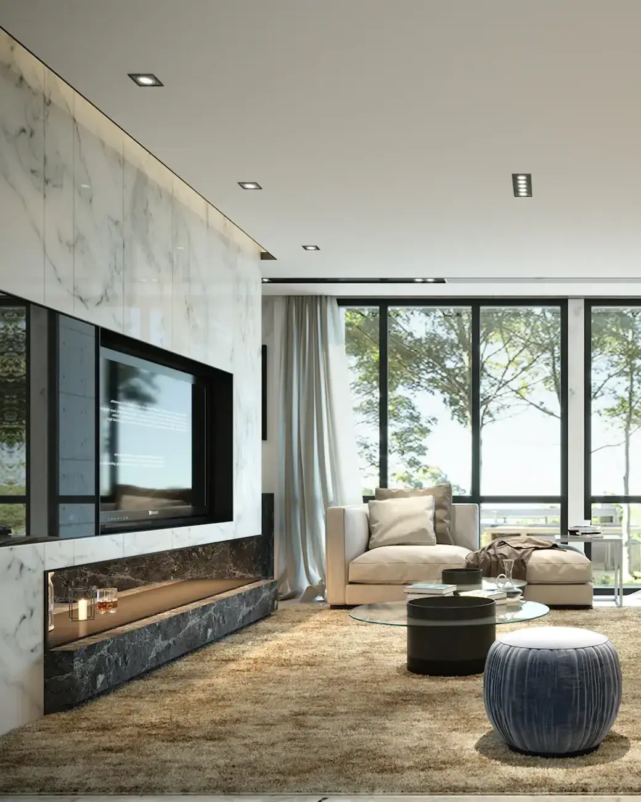
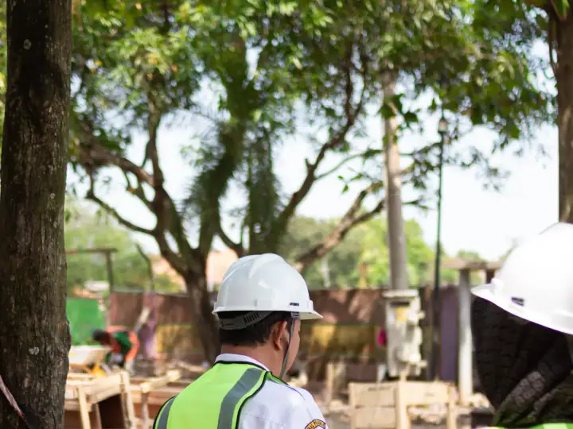
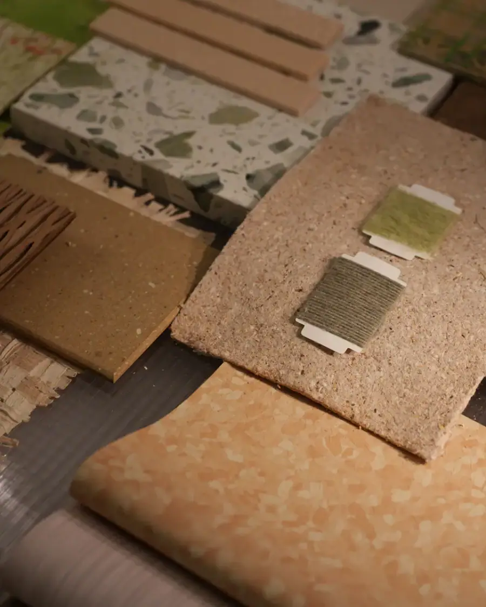

Arquitetura e interiores · Adrianópolis, Manaus
Ideias que respeitam o seu estilo e o seu gosto.

Projetos de interiores, reformas e consultoria com materiais escolhidos para a sua realidade. O arquiteto Indaiassu Pompeu cumpre prazos e esclarece cada dúvida com educação.
- 5,0 ★★★★★
- 23 avaliações no Google
- Sob medida
- cada projeto é único
- Presencial
- e on-line · Manaus
Serviços
Projetos pensados para a sua rotina.
Escolha o serviço e fale direto com o escritório do arquiteto Indaiassu Pompeu. Mande fotos, medidas ou a planta do imóvel: a mensagem já vai pronta no WhatsApp.
-
I
Design de interiores
Ambientes funcionais e acolhedores: layout, materiais, iluminação, marcenaria e escolha de cada peça.
Conversar sobre isso
-
II
Projeto residencial
Casas pensadas do terreno à obra: implantação, luz natural, fluxos e fachada com a sua identidade.
Conversar sobre isso
-
III
Reforma de apartamentos
Reformas planejadas para não ter surpresa: projeto executivo, orçamento e cronograma claros.
Conversar sobre isso
-
IV
Projetos comerciais
Lojas, clínicas, escritórios e restaurantes que traduzem a marca e funcionam bem no dia a dia.
Conversar sobre isso
-
V
Consultoria de decoração
Uma ou poucas visitas para orientar cores, layout, iluminação e compras, sem projeto completo.
Conversar sobre isso
-
VI
Acompanhamento de obra
Visitas técnicas e gestão da obra para o projeto sair do papel como foi desenhado.
Conversar sobre isso
Um bom projeto começa pela forma como você vive, não pela planta.

O estúdio
Consultoria e escolha de materiais para a sua realidade.
Os clientes elogiam as ótimas ideias, o respeito ao gosto de cada um, o cumprimento dos prazos e a atenção aos detalhes, da consultoria à escolha dos materiais.
- Interiores
- do layout ao acabamento
- Consultoria
- e escolha de materiais
- Seg. a sex.
- das 9h às 18h
- Nota 5,0
- em 23 avaliações
Como funciona
Da primeira conversa à entrega.
Você entende o processo, os prazos e o investimento antes de começar.
- I.
A primeira conversa
Você conta o que quer, como vive e quanto pretende investir. Fotos e planta ajudam muito.
- II.
Projeto
Estudo, imagens 3D e detalhamento: você aprova cada etapa antes de seguir.
- III.
Execução
Projeto executivo para os fornecedores e, se quiser, acompanhamento da obra até a entrega.
Segunda a sexta: 09h–18h
Avaliações públicas
Quem já viveu o projeto, recomenda.
Avaliações reais de clientes publicadas no Google Maps.
Eu e minha esposa utilizamos os serviços quando alugamos um apartamento. Fiquei muito satisfeito. Queria fazer pequenas adaptações para deixar mais agradável e "a nossa cara". Com poucas intervenções pude chamar o apartamento de lar, ficou muito aprazível e confortável.
O Indaiassu é um excelente profissional. Tem ótimas ideias e respeita o estilo e o gosto dos clientes. Cumpriu todos os prazos e sempre foi muito educado ao esclarecer as nossas dúvidas. O projeto ficou lindo, funcional e superou as nossas expectativas. Recomendo!
O Indaiassu é um excelente profissional. Nos atendeu tanto com a consultoria quanto com as escolhas dos melhores materiais de acordo com a nossa realidade. Muito atencioso nos detalhes, nas combinações e principalmente na temporalidade dos materiais.
Projeto inesquecível, barbearia Número 1é extremamente elegante, receptiva, confortável e acolhedora. Recomendo para todos!
Excelente, criativo e competente com ótima prestação de serviço, recomendo.
Dúvidas frequentes
Perguntas que todo cliente faz.
Não encontrou a sua? Mande sua dúvida pelo WhatsApp com fotos ou a planta do imóvel.
Onde fica o escritório do arquiteto Indaiassu Pompeu?
O escritório do arquiteto Indaiassu Pompeu fica na Av. Mário Ypiranga, 315, sala 601 (The Office), Adrianópolis, em Manaus (AM), CEP 69057-000. Pelo botão "Traçar rota" nesta página você abre o caminho direto no Google Maps.
Qual o horário de atendimento do escritório do arquiteto Indaiassu Pompeu?
O escritório do arquiteto Indaiassu Pompeu atende segunda a sexta, das 09h às 18h. Não abre aos sábados e aos domingos. O agendamento é feito pelo WhatsApp.
Como começar um projeto com o escritório do arquiteto Indaiassu Pompeu?
É só chamar no WhatsApp (92) 99446-5800 pelo botão "Conversar sobre o projeto". Mande uma mensagem pelo WhatsApp contando o que você quer fazer, com fotos ou a planta se tiver. É marcada uma conversa para entender o seu espaço, a sua rotina e o seu orçamento.
Quais serviços o escritório do arquiteto Indaiassu Pompeu oferece?
Design de interiores, Projeto residencial, Reforma de apartamentos, Projetos comerciais, Consultoria de decoração e acompanhamento de obra. O escopo e o investimento são definidos depois da primeira conversa, de acordo com o seu projeto.
Qual a diferença entre arquiteto e designer de interiores?
O arquiteto pode projetar construções e alterar estrutura, com registro no CAU. O designer de interiores cuida dos ambientes internos: layout, materiais, mobiliário e iluminação.
Quanto tempo leva um projeto de casa?
Depende do tamanho e da complexidade. O cronograma de cada etapa (estudo, aprovação na prefeitura e executivo) é apresentado logo no início.
Preciso de projeto para reformar um apartamento?
Para reformas com demolição de paredes, troca de revestimentos ou instalações, o projeto evita erros e gastos extras, e muitos condomínios exigem um responsável técnico (RRT ou ART).
O que é uma consultoria de decoração?
É um atendimento mais curto, com visitas e orientações práticas sobre cores, layout e compras, para quem não precisa de um projeto completo.
Contato
Atendimento em Manaus e on-line.
- Endereço
- Av. Mário Ypiranga, 315, sala 601 (The Office)
Adrianópolis · Manaus, AM · 69057-000 - Horário
- Segunda a sexta09h às 18hSábado e domingoFechado
- Telefone
- (92) 99446-5800
O espaço que você imagina começa numa conversa.
Fale com o escritório do arquiteto Indaiassu Pompeu pelo WhatsApp e conte o que você quer transformar.
Conversar sobre o projeto